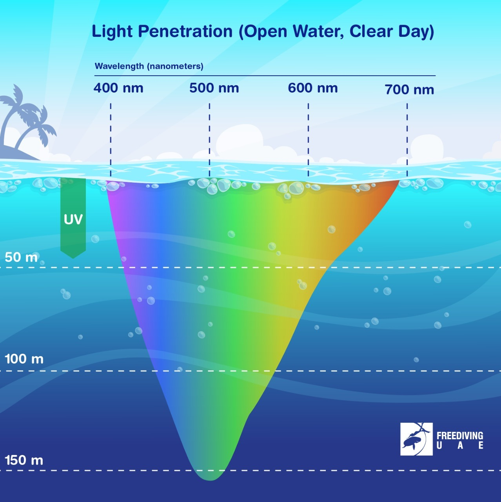
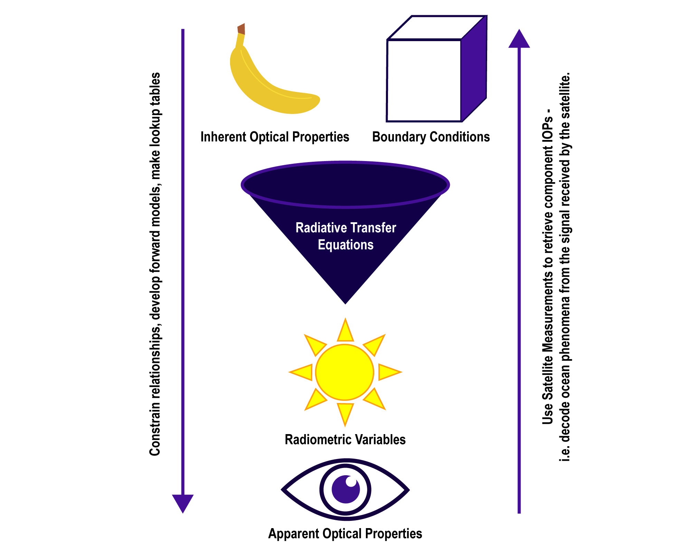
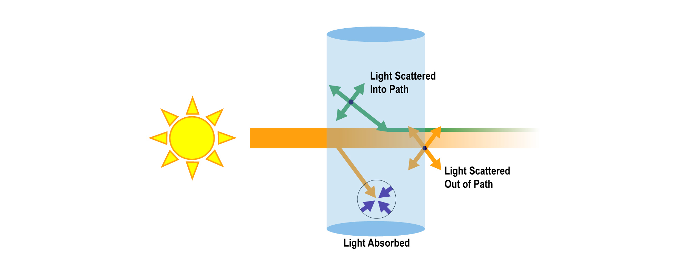
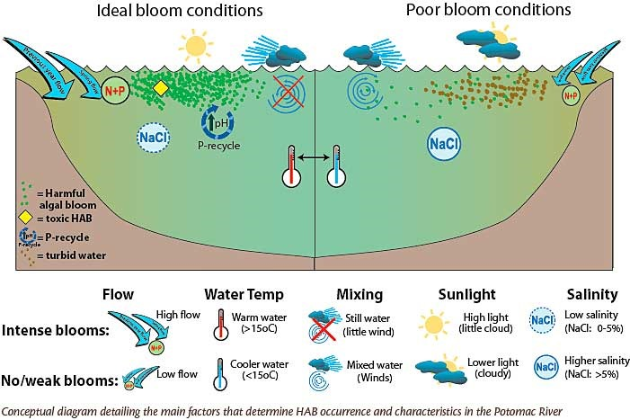

5. How Does Ocean Interact With Light?
5.1 Light Attenuation Through the Ocean
5.11 Attenuation
- Definition: Light attenuation refers to the gradual reduction of light as it travels deeper into the ocean. The intensity of light decreases because of absorption and scattering by water and particles in the water.
5.12 Why Does Light Attenuate in the Ocean?
- The “stuff” in the water, like dirt, plankton, or tiny particles, makes it harder for light to go deep.
- In clear water (like the Caribbean), light can go deeper, but in muddy or murky water (like a river), light can barely travel below the surface.
5.13 How Light Changes in the Ocean:
- Not all colors of light go the same distance in water. For example:
- Red light is absorbed near the surface, so everything looks blue or green as you go deeper.
- Blue light travels deeper than other colors, but even blue light can only go so far.
5.14 How Deep Does Light Go?
- In most cases, light can only reach about 200 meters (650 feet) deep into the ocean, which is about the length of two football fields.
- Below 1 km (3300 feet), it's completely dark. No sunlight reaches there, so animals living in the deep ocean use other ways to see, like bioluminescence (making their own light).
5.15 Comparing Ocean and Atmosphere:

- Light moves much more easily through the air (atmosphere) than through water. For example, light travels 10,000 km through the atmosphere, but only goes 200 meters in the ocean before it gets too dim to see.
5.2 Optically Active Components:OAC's
The scientific term for "stuff" that interacts with light is optically active constituents (OACs). OACs can interact with incoming light to give color to our watery worlds. They span a wide size range from molecules (e.g., H2O) all the way up to meters long kelp plants anchored along shallow shorelines.
- There are many ways to categorize OACs, but ocean scientists can group them in the following ways:
- Water contains H2O molecules plus inorganic dissolved materials such as salt and CO2, each of which interacts in various ways with sunlight. In clear ocean waters, the effect of water on ocean color through both absorption and scattering of light in the visible range must be considered.
- Colored dissolved organic material (CDOM) are small organic matter molecules with light-reacting properties in the visible range. CDOM is often created from decaying detritus, or plant matter.
- Phytoplankton are microscopic organisms that live in the water column. Phytoplankton are mostly single-celled plants though some are also bacteria or protists. All phytoplankton photosynthesize, that is they have chlorophyll pigments that allow them to use the Sun's energy to fix carbon dioxide into organic matter.
- Non-algal particles (NAP) are those that do not contain phytoplankton pigments. NAP includes living and dead and decaying matter, bacteria, and viruses. Inorganic particles are another type of NAP, including mineral particles made by organisms such as shells and those derived from non-living sources such as clay, silt, and sand. Sadly, given the current state of the global ocean, we must add tiny particles of plastic to the list of NAPs.
- Bubbles are mainly atmospheric gases mixed into the upper surface waters by wave and wind action, or in much smaller quantities, produced by or exuded into the water by living organisms.
5.3 Inherent Optical Properties & Apparent Optical Properties: IOP & AOP

5.31 Inherent Optical Properties (IOPs):
- Definition: IOPs are the fundamental characteristics of water and particles in it, which do not depend on the light source (like the Sun). These include
- Absorption: How water and particles absorb light.
- Scattering: How light bounces off particles in the water.
- Importance in PACE: The PACE satellite measures IOPs to understand how different components in the ocean (like phytoplankton, dissolved organic matter, and sediments) affect light. This helps scientists study the composition of the ocean and track things like algal blooms.
5.32 Apparent Optical Properties (AOPs):
- Definition: AOPs describe how light behaves as it travels through water and depends on both the light source (Sun) and the water's characteristics. AOPs include:
- Water Color: The color of the ocean as seen from space, which changes based on what's in the water (e.g., blue for clear water, green for water with phytoplankton).
- Light Attenuation: How much light penetrates and is reduced as it moves through the water.
- Importance in PACE: By measuring AOPs, the PACE satellite can monitor changes in ocean color to detect phytoplankton blooms, pollution, and changes in ecosystem health over time.
5.4 Radioactive Tranfer
5.41 What is Radioactive Transfer

Radiative transfer refers to how energy, in the form of light or radiation, moves through a medium like the atmosphere or ocean. It describes how light is absorbed, scattered, or reflected as it travels through gases, liquids, or solids.
Radiative transfer helps us understand how sunlight interacts with the atmosphere's and ocean's optical constituents (e.g., clouds, air pollution, breaking waves on the sea surface, phytoplankton or sediment in the water, etc.). In other words, we can connect various puzzle pieces together to determine what kind of "stuff" in Earth's ocean and atmosphere interacted with the photons of sunlight before it reached the PACE satellite.
5.42 Radiative Transfer The Ins and Outs
Processes that change either the energy or wavelength of light as it passes through a medium such as air or water are covered by radiative transfer. At the core of radiative transfer is a set of equations that merge these processes to identify the net change in radiance (i.e., incoming sunlight) as light moves through a medium (i.e., the ocean or atmosphere). It's complicated because the same process can result in both losses and gains in radiance along any light path. For example, losses occur when light is scattered out of the radiant path or is absorbed within the radiant path. Similarly, gains occur when light is scattered into the radiant path.
Additional Topic: Harmful Algal Blooms

Phytoplankton make up the base of most ocean food webs, using the Sun's energy to power photosynthesis. When phytoplankton have access to enough nutrients and light, there can be exponential growth resulting in "blooms". Blooms of many algae fuel marine ecosystems, eventually supporting large fish populations and fisheries. However, the helpfulness versus harmfulness of blooms depends on the type of phytoplankton and where the bloom occurs. Instead of positively supporting to the natural food web, blooms may become harmful to other organisms in their immediate environment. Harmful Algal Blooms (HABs) occur when high concentrations of cells produce toxins or have other harmful effects such as depleting the oxygen needed by fish, shellfish, or marine mammals. Monitoring HABs is important as they may lead to human and marine wildlife sickness and mortality, contaminated aquaculture populations, and beach closures.